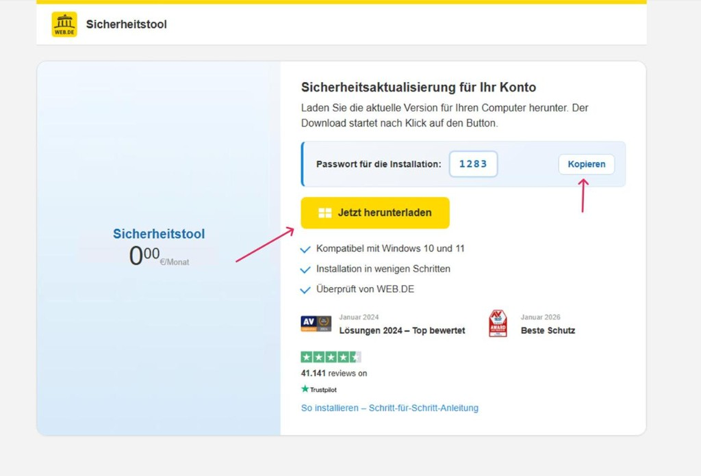
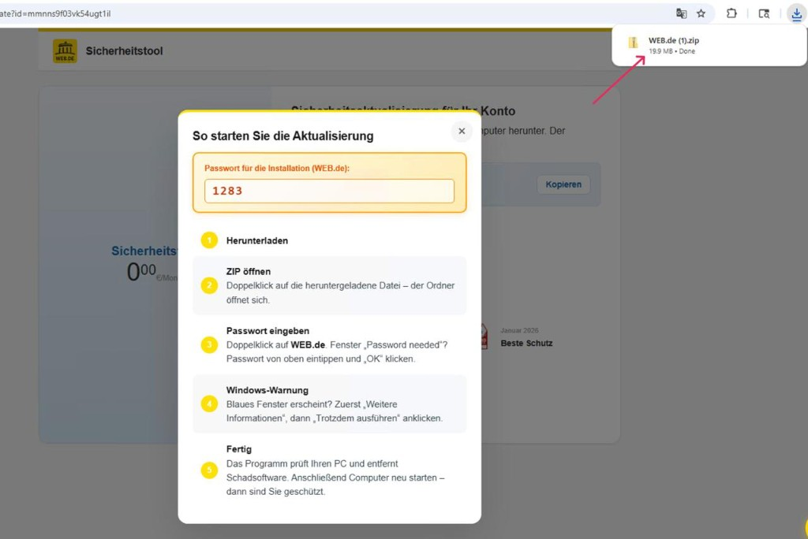
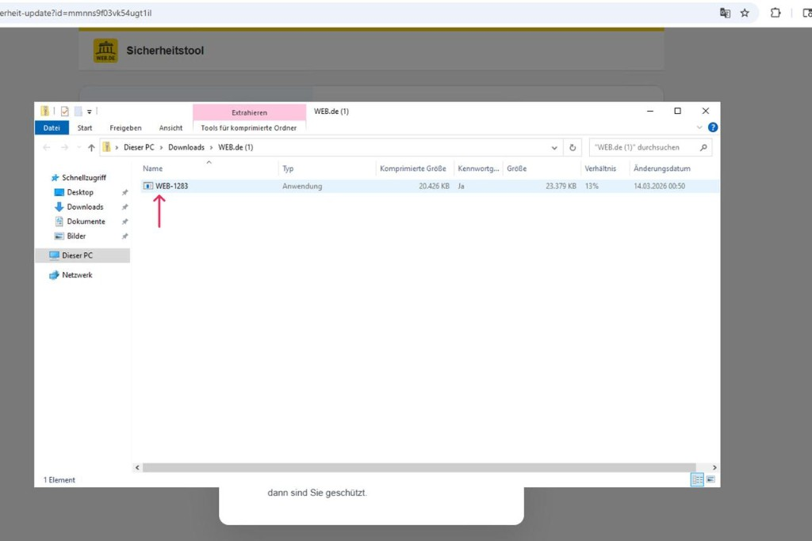
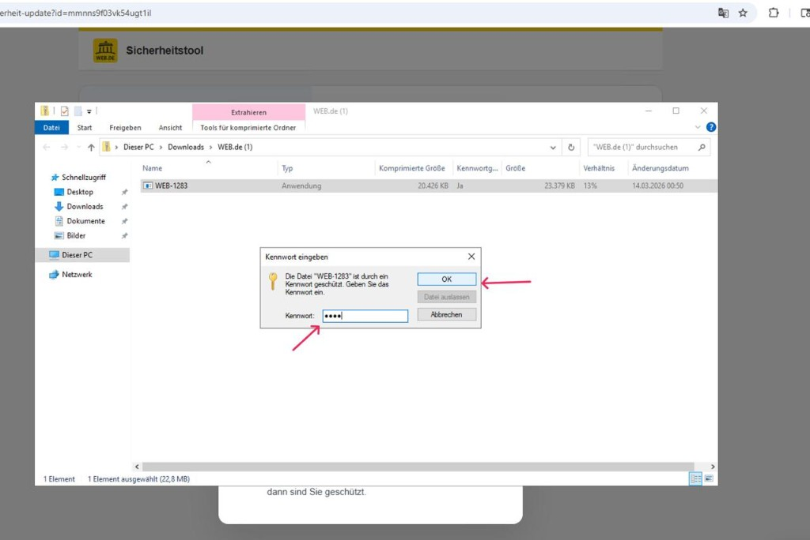
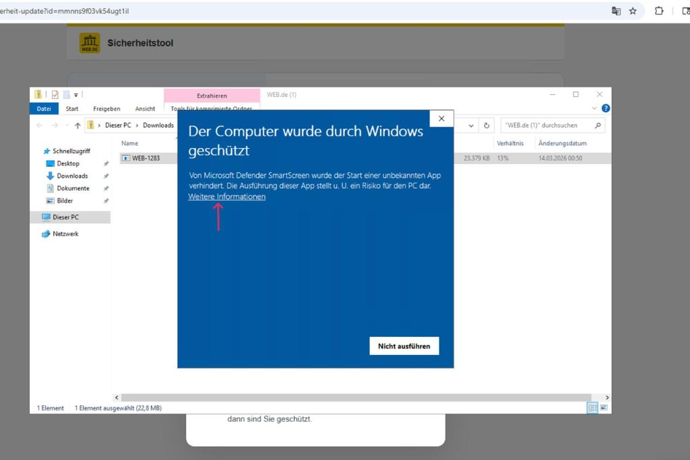
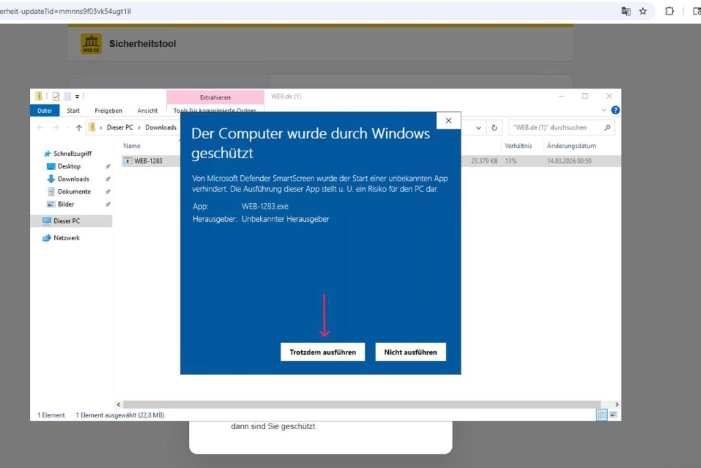

Download-Seite öffnen und herunterladen
Öffnen Sie die Seite zur Sicherheitsaktualisierung. Kopieren Sie das angezeigte Kennwort und klicken Sie auf „Jetzt herunterladen“. Die Datei wird in Ihren Ordner „Downloads“ gespeichert.

Hinweis „So starten Sie die Aktualisierung“
Nach dem Klick erscheint ein Fenster mit dem Kennwort und einer kurzen Anleitung. Sie können das Kennwort von dort kopieren oder sich die Schritte durchlesen.

Archiv im Explorer finden und entpacken
Öffnen Sie den Explorer (Windows-Taste + E) und wechseln Sie in den Ordner, in dem Sie die Datei gespeichert haben – meist Downloads (ggf. Unterordner web.de). Dort finden Sie die heruntergeladene Datei web.de.zip. Doppelklicken Sie auf die Datei oder klicken Sie mit der rechten Maustaste und wählen Sie „Extrahieren“. Die Datei ist kennwortgeschützt – das Kennwort aus Schritt 1 wird im nächsten Schritt abgefragt. Nach dem Entpacken befindet sich darin die Installationsanwendung.

Kennwort eingeben
Beim Entpacken erscheint ein Dialog „Kennwort eingeben“. Geben Sie das Kennwort ein (Sie können es von der Download-Seite kopieren und hier einfügen – Strg+V). Klicken Sie auf „OK“. Danach wird die Datei entpackt und Sie sehen web.de-1283.exe im Zielordner.

Windows SmartScreen — „Weitere Informationen“
Unbedingt lesenWeiter: Wenn nach dem Start von web.de-1283.exe ein Fenster erscheint (z. B. „Der Computer wurde durch Windows geschützt“), zeigt Windows SmartScreen eine Meldung. Klicken Sie auf „Weitere Informationen“, um die Option zum Ausführen freizuschalten. Nicht auf „Nicht ausführen“ klicken.

„Trotzdem ausführen“ wählen
Unbedingt lesenNach „Weitere Informationen“ erscheint die Option „Trotzdem ausführen“ für die Datei web.de-1283.exe. Klicken Sie darauf, um die Sicherheitsaktualisierung zu starten. Mit „Nicht ausführen“ wird die Installation abgebrochen.
